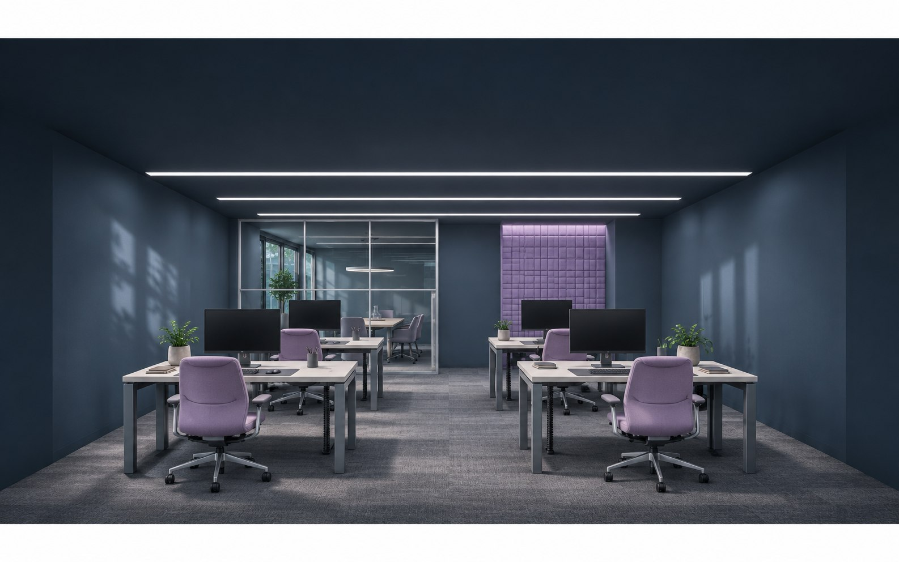
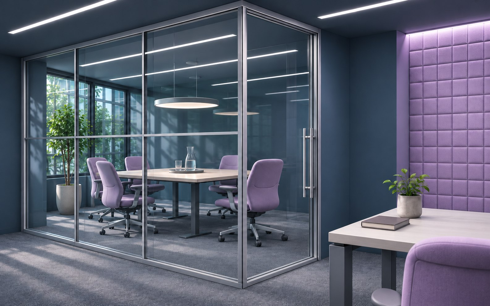
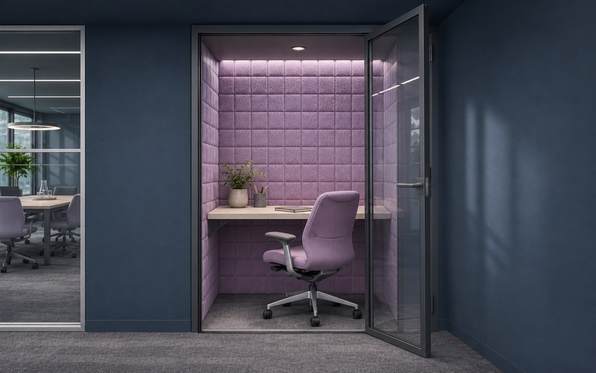

Ковровая плитка
Заменяется отдельными модулями.
Рабочая среда IT-команды
Офис, где разговор не проходит сквозь сосредоточенную работу. Открытость определяется задачей, а не отсутствием стен.
Выбрать режим работы
Визуализации сгенерированы ИИ для концепта; это не фотографии реализованного объекта.


Команда выбирает пространство по текущей задаче. Между шумным и тихим — буфер с хранением и короткими встречами.
Шкала иллюстрирует характер контакта, а не измеренные децибелы.
Кухня и общение у входа, рабочие места дальше. Санузлы и инженерные узлы сохраняются в служебном ядре.
Пример — концепт для портфолио. Условная площадь 240 м². Посадку, вентиляцию, доступность и эвакуационные пути уточняют после обследования.
Над столами — звукопоглощающие баффлы. Между ними проходит свет, а инженерные трассы остаются доступными.
Заменяется отдельными модулями.
Мягкие экраны и потолок.
Свет проходит, взгляд задерживается.
Рабочие поверхности без бликов.
Пример — концепт для портфолио. Проектирование 240 м²; ремонт, мебель, акустические измерения и инженерные разделы оплачиваются отдельно.
700 ₽/м²
168 000 ₽900 ₽/м²
216 000 ₽1 400 ₽/м²
336 000 ₽500 ₽/м²
120 000 ₽Визуализация — от 30 000 ₽ отдельно.